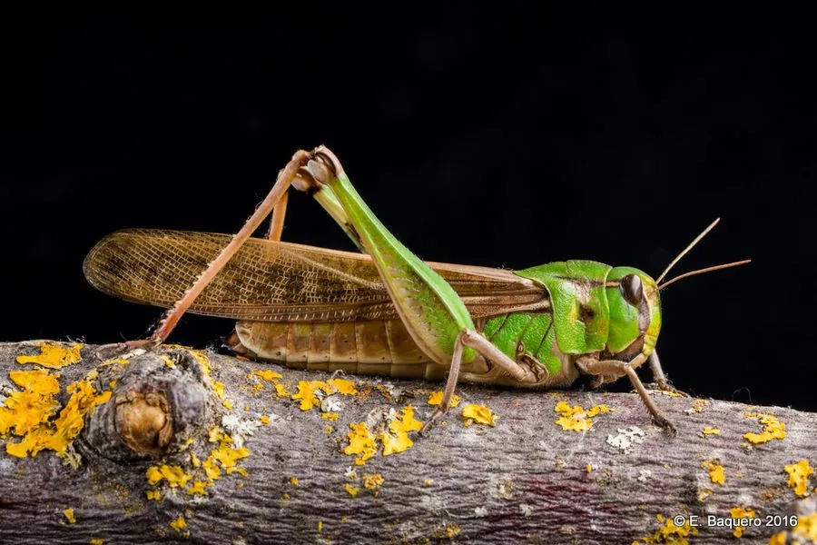

昆虫 · 动物界
飞蝗 Locusta migratoria

世界著名的迁飞性害虫，群居型个体能结成庞大蝗群远距离迁飞，可造成大范围农作物减产，中国历史上蝗灾频发。
- 分类
- 门节肢动物门纲昆虫纲目直翅目科蝗科属蝗属
- 栖息环境
- 草原、湿地、农田与河滩，群居型个体可聚集迁飞
- 地理分布
- 欧洲、亚洲、非洲和澳大利亚的草原与农区
- 保护级别
- 暂无评估；重要的农业害虫
物种志
飞蝗成虫体长约 3.5–5.5 cm，后足腿节发达，善于跳跃。它的体色随生态型变化：散居型多为绿色或褐色，群居型则呈黄褐色并带黑色斑纹，触角较短，前翅狭长，能持续飞行。
飞蝗最引人注目的是密度依赖的型变：低密度时个体散居、性情温和，高密度时会转变成群居型并成群聚集迁飞，蝗群可绵延数千米，日食量惊人，所过之处禾本科作物和牧草常被啃食一空。雌虫把卵块产在土中越冬，一年可发生 1–3 代。飞蝗广布欧洲、亚洲、非洲和澳大利亚，中国历史上蝗灾与水灾、旱灾并称三大自然灾害，如今通过监测预警、生态调控和生物防治已能有效控制，目前仍是全球蝗灾监测的重点对象之一。
形态与习性
- 食性取食禾本科作物与牧草，食量大
- 体长约 3.5–5.5 cm
- 生活史一年可发生 1–3 代，以卵块在土中越冬
- 生态型散居型与群居型可随种群密度相互转化
- 迁飞群居型蝗群可远距离迁飞，危害范围大
- 防治监测预警结合微孢子虫、绿僵菌等生物防治
趣味知识
- 飞蝗能随密度变化在散居型和群居型之间转换，是表型可塑性的经典例子。
- 群居型飞蝗体色变深并聚集迁飞，蝗群可绵延数千米。
- 中国历史上蝗灾与旱灾、水灾并称三大自然灾害，近几十年已得到有效控制。